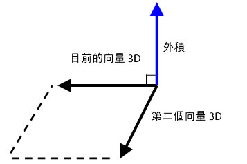

| 套件 | flash.geom |
| 類別 | public class Vector3D |
| 繼承 | Vector3D |
| 語言版本: | ActionScript 3.0 |
| 執行階段版本: | Flash Player 10, AIR 1.5 |
x 屬性代表水平軸，而 y 屬性代表垂直軸。在三維空間中，z 屬性代表深度。當物件向右移動時，x 屬性值會增加。當物件向下移動時，y 屬性值會增加。當物件離視點更遠時，z 屬性值會增加。使用透視投影和縮放時，接近螢幕的物件看起來較大，而當物件離螢幕越遠，看起來便越小。如同在右手系三維座標系統中，正 z 軸會背向檢視者，而且當物件離檢視者的眼睛更遠時，z 屬性值會增加。球體空間的原點 (0,0,0) 是舞台的左上角。

Vector3D 類別也可以代表方向，即從座標原點如 (0,0,0) 指向端點的箭頭，或是代表 RGB (紅色、綠色、藍色) 色彩模型的浮點組件。
四元數標記法會導入第四個元素 w 屬性，它會提供額外的方向資訊。例如，w 屬性可以定義 Vector3D 物件的旋轉角度。旋轉角度以及 x、y 和 z 座標的組合可以決定顯示物件的方向。下面是矩陣標記法中的 Vector3D 元素表示：

相關 API 元素
 隱藏繼承公用屬性
隱藏繼承公用屬性 顯示繼承公用屬性
顯示繼承公用屬性| 屬性 | 定義自 | ||
|---|---|---|---|
 | constructor : Object
類別物件的參照或是特定物件實體的建構函數。 | Object | |
| length : Number [唯讀]
目前 Vector3D 物件從原點 (0,0,0) 到此物件的 x、y 和 z 座標之間的長度。 | Vector3D | ||
| lengthSquared : Number [唯讀]
目前 Vector3D 物件長度的平方，使用 x、y 和 z 屬性計算而來。 | Vector3D | ||
| w : Number
Vector3D 物件的第四個元素 (除了 x、y 和 z 屬性之外) 可以保存旋轉角度之類的資料。 | Vector3D | ||
| x : Number
Vector3D 物件的第一個元素，例如三維空間中某個點的 x 座標。 | Vector3D | ||
| y : Number
Vector3D 物件的第二個元素，例如三維空間中某個點的 y 座標。 | Vector3D | ||
| z : Number
Vector3D 物件的第三個元素，例如三維空間中某個點的 z 座標。 | Vector3D | ||
| 方法 | 定義自 | ||
|---|---|---|---|
建立 Vector3D 物件的實體。 | Vector3D | ||
將目前 Vector3D 物件的 x、y 和 z 元素值加入至另一個 Vector3D 物件的 x、y 和 z 元素值。 | Vector3D | ||
[靜態]
以弧度傳回兩個向量之間的夾角。 | Vector3D | ||
傳回新的 Vector3D 物件，新的物件為目前 Vector3D 物件完全相同的副本。 | Vector3D | ||
將來源 Vector3D 物件中的所有向量資料複製到呼叫的 Vector3D 物件。 | Vector3D | ||
傳回新的 Vector3D 物件，新的物件會與目前 Vector3D 物件和另一個 Vector3D 物件垂直 (呈直角)。 | Vector3D | ||
依照指定之 Vector3D 物件的 x、y 和 z 元素值，遞減目前 Vector3D 物件的 x、y 和 z 元素值。 | Vector3D | ||
[靜態]
傳回兩個 Vector3D 物件之間的距離。 | Vector3D | ||
如果目前 Vector3D 物件和指定為參數的 Vector3D 物件是單位頂點，這個方法會傳回這兩個頂點之間夾角的餘弦值。 | Vector3D | ||
藉由比較目前 Vector3D 物件的 x、y 和 z 元素值與指定之 Vector3D 物件的 x、y 和 z 元素值，判斷兩個 Vector3D 物件是否相等。 | Vector3D | ||
|
指出物件是否有已定義的指定屬性。 | Object | |
依照指定之 Vector3D 物件的 x、y 和 z 元素值，遞增目前 Vector3D 物件的 x、y 和 z 元素值。 | Vector3D | ||
|
指出 Object 類別的實體是否位於指定為參數的物件原型鏈中。 | Object | |
將目前 Vector3D 物件的元素與指定之 Vector3D 物件的元素加以比較，以判斷這兩個物件是否幾近相等。 | Vector3D | ||
將目前的 Vector3D 物件設定為反轉。 | Vector3D | ||
藉由將前三個元素 (x, y, z) 除以向量長度，將 Vector3D 物件轉換為單位向量。 | Vector3D | ||
將目前 Vector3D 物件的 x、y 和 z 屬性值除以其 w 屬性值。 | Vector3D | ||
|
指出指定的屬性是否存在，以及是否可列舉。 | Object | |
依純量縮放目前的 Vector3D 物件。 | Vector3D | ||
|
為迴圈作業設定動態屬性的可用性。 | Object | |
將 Vector3D 的成員設定為指定值
| Vector3D | ||
將目前的 Vector3D 物件的 x、y 和 z 元素值從另一個 Vector3D 物件的 x、y 和 z 元素值中減去。 | Vector3D | ||
|
傳回代表此物件的字串，根據地區特定慣例進行格式化。 | Object | |
傳回目前 Vector3D 物件的字串形式。 | Vector3D | ||
|
會傳回指定之物件的基本值。 | Object | |
| 常數 | 定義自 | ||
|---|---|---|---|
| X_AXIS : Vector3D [靜態]
定義為 Vector3D 物件的 x 軸，座標為 (1,0,0)。 | Vector3D | ||
| Y_AXIS : Vector3D [靜態]
定義為 Vector3D 物件的 y 軸，座標為 (0,1,0)。 | Vector3D | ||
| Z_AXIS : Vector3D [靜態]
定義為 Vector3D 物件的 z 軸，座標為 (0,0,1)。 | Vector3D | ||
length | 屬性 |
lengthSquared | 屬性 |
w | 屬性 |
public var w:Number| 語言版本: | ActionScript 3.0 |
| 執行階段版本: | Flash Player 10, AIR 1.5 |
Vector3D 物件的第四個元素 (除了 x、y 和 z 屬性之外) 可以保存旋轉角度之類的資料。預設值為 0。
四元數標記法會運用角度做為三維旋轉計算中的第四個元素。w 屬性可以用來定義 Vector3D 物件的旋轉角度。旋轉角度和座標 (x,y,z) 的組合會決定顯示物件的方向。
此外，w 屬性也可以做為投影三維位置的透視彎曲因數，或是用於呈現二維空間中投影之三維座標的投影變化值。例如，您可以使用 Matrix3D.rawData 屬性來建立投影矩陣，當套用至 Vector3D 物件時，會在 Vector3D 物件的第四個元素 (w 屬性) 中產生變化值。將 Vector3D 物件的其他元素除以變化值就會產生投影的 Vector3D 物件。您可以使用 Vector3D.project() 方法，將 Vector3D 物件的前三個元素除以其第四個元素。
相關 API 元素
x | 屬性 |
public var x:Number| 語言版本: | ActionScript 3.0 |
| 執行階段版本: | Flash Player 10, AIR 1.5 |
Vector3D 物件的第一個元素，例如三維空間中某個點的 x 座標。預設值為 0。
y | 屬性 |
public var y:Number| 語言版本: | ActionScript 3.0 |
| 執行階段版本: | Flash Player 10, AIR 1.5 |
Vector3D 物件的第二個元素，例如三維空間中某個點的 y 座標。預設值為 0。
z | 屬性 |
public var z:Number| 語言版本: | ActionScript 3.0 |
| 執行階段版本: | Flash Player 10, AIR 1.5 |
Vector3D 物件的第三個元素，例如三維空間中某個點的 z 座標。預設值為 0。
Vector3D | () | 建構函式 |
public function Vector3D(x:Number = 0., y:Number = 0., z:Number = 0., w:Number = 0.)| 語言版本: | ActionScript 3.0 |
| 執行階段版本: | Flash Player 10, AIR 1.5 |
建立 Vector3D 物件的實體。如果您未指定建構函式的參數，則會以元素 (0,0,0,0) 來建立 Vector3D 物件。
參數x:Number (default = 0.) | |
y:Number (default = 0.) | |
z:Number (default = 0.) | |
w:Number (default = 0.) |
add | () | 方法 |
public function add(a:Vector3D):Vector3D| 語言版本: | ActionScript 3.0 |
| 執行階段版本: | Flash Player 10, AIR 1.5 |
將目前 Vector3D 物件的 x、y 和 z 元素值加入至另一個 Vector3D 物件的 x、y 和 z 元素值。add() 方法不會變更目前的 Vector3D 物件，而是會傳回具有新值的新 Vector3D 物件。
將兩個向量相加的結果會產生新的向量。視覺化此結果的其中一個方式，是從第一個向量的原點或尾部繪製向量至第二個向量的結尾或開頭。產生的向量就是介於第一個向量原點和第二個向量結束點的距離。

參數
a:Vector3D — 要加入至目前 Vector3D 物件的 Vector3D 物件。
|
Vector3D — Vector3D 物件，為目前 Vector3D 物件加入至另一個 Vector3D 物件的結果。
|
相關 API 元素
angleBetween | () | 方法 |
public static function angleBetween(a:Vector3D, b:Vector3D):Number| 語言版本: | ActionScript 3.0 |
| 執行階段版本: | Flash Player 10, AIR 1.5 |
以弧度傳回兩個向量之間的夾角。傳回的角度是第一個 Vector3D 物件旋轉的最小弧度，直到它與第二個 Vector3D 物件對齊為止。
angleBetween() 方法是靜態方法。您可以直接將它做為 Vector3D 類別的方法使用。
若要將度數轉換為弧度，您可以使用下列公式：
radian = Math.PI/180 * degree
參數
a:Vector3D — 第一個 Vector3D 物件。
| |
b:Vector3D — 第二個 Vector3D 物件。
|
Number — 兩個 Vector3D 物件之間的夾角。
|
clone | () | 方法 |
copyFrom | () | 方法 |
crossProduct | () | 方法 |
public function crossProduct(a:Vector3D):Vector3D| 語言版本: | ActionScript 3.0 |
| 執行階段版本: | Flash Player 10, AIR 1.5 |
傳回新的 Vector3D 物件，新的物件會與目前 Vector3D 物件和另一個 Vector3D 物件垂直 (呈直角)。如果傳回的 Vector3D 物件的座標為 (0,0,0)，這兩個 Vector3D 物件就是彼此平行。

您可以搭配攝影機或眼睛視點的標準化頂點一起使用多邊形面之兩個頂點的標準化外積，來取得內積。內積值可以識別三維物件的某一面是否從視點隱藏。
參數
a:Vector3D — 第二個 Vector3D 物件。
|
Vector3D — 新的 Vector3D 物件，與目前 Vector3D 物件和指定為參數的 Vector3D 物件垂直。
|
相關 API 元素
decrementBy | () | 方法 |
public function decrementBy(a:Vector3D):void| 語言版本: | ActionScript 3.0 |
| 執行階段版本: | Flash Player 10, AIR 1.5 |
依照指定之 Vector3D 物件的 x、y 和 z 元素值，遞減目前 Vector3D 物件的 x、y 和 z 元素值。不同於 Vector3D.subtract() 方法，decrementBy() 方法會變更目前的 Vector3D 物件，而且不會傳回新的 Vector3D 物件。
參數
a:Vector3D — 包含要從目前 Vector3D 物件中減去之值的 Vector3D 物件。
|
相關 API 元素
distance | () | 方法 |
public static function distance(pt1:Vector3D, pt2:Vector3D):Number| 語言版本: | ActionScript 3.0 |
| 執行階段版本: | Flash Player 10, AIR 1.5 |
傳回兩個 Vector3D 物件之間的距離。distance() 方法是靜態方法。您可以直接將它做為 Vector3D 類別的方法使用，以取得兩個三維點之間的歐幾里德 (Euclidean) 距離。
參數
pt1:Vector3D — 做為第一個三維點的 Vector3D 物件。
| |
pt2:Vector3D — 做為第二個三維點的 Vector3D 物件。
|
Number — 兩個 Vector3D 物件之間的距離。
|
dotProduct | () | 方法 |
public function dotProduct(a:Vector3D):Number| 語言版本: | ActionScript 3.0 |
| 執行階段版本: | Flash Player 10, AIR 1.5 |
如果目前 Vector3D 物件和指定為參數的 Vector3D 物件是單位頂點，這個方法會傳回這兩個頂點之間夾角的餘弦值。單位頂點是指向相同方向的頂點，但其長度為一。單位頂點會移除向量長度，做為結果的因數。您可以使用 normalize() 方法將向量轉換為單位向量。
dotProduct() 方法會找出兩個頂點之間的夾角。它也會用於背面剔除或光源計算。背面剔除是用來判斷哪些表面會從視點隱藏的程序。您可以使用攝影機 (或眼睛) 視點的標準化頂點和多邊形面之頂點的外積，來取得內積。如果內積小於零，表示此多邊形面朝向攝影機或檢視者。如果兩個單位頂點彼此垂直，它們是直交而且內積為零。如果兩個頂點彼此平行，則內積為一。
參數
a:Vector3D — 第二個 Vector3D 物件。
|
Number — 純量，為目前 Vector3D 物件和指定之 Vector3D 物件的內積。
|
相關 API 元素
equals | () | 方法 |
public function equals(toCompare:Vector3D, allFour:Boolean = false):Boolean| 語言版本: | ActionScript 3.0 |
| 執行階段版本: | Flash Player 10, AIR 1.5 |
藉由比較目前 Vector3D 物件的 x、y 和 z 元素值與指定之 Vector3D 物件的 x、y 和 z 元素值，判斷兩個 Vector3D 物件是否相等。如果這些元素的值相同，這兩個 Vector3D 物件就是相等的。如果第二個選擇性的參數是設定為 true，則會比較 Vector3D 物件的所有四個元素，包括 w 屬性。
參數
toCompare:Vector3D — 要與目前 Vector3D 物件相比較的 Vector3D 物件。
| |
allFour:Boolean (default = false)w 屬性是否用於比較。
|
Boolean — 如果指定的 Vector3D 物件等於目前的 Vector3D 物件則為值 true，如果不等於則為 false。
|
相關 API 元素
incrementBy | () | 方法 |
nearEquals | () | 方法 |
public function nearEquals(toCompare:Vector3D, tolerance:Number, allFour:Boolean = false):Boolean| 語言版本: | ActionScript 3.0 |
| 執行階段版本: | Flash Player 10, AIR 1.5 |
將目前 Vector3D 物件的元素與指定之 Vector3D 物件的元素加以比較，以判斷這兩個物件是否幾近相等。如果兩個頂點的所有元素的值相等，或者如果比較結果是在容許範圍內，這兩個 Vector3D 物件就是幾近相等。兩個元素之間的差必須小於指定為 tolerance 參數的數字。如果第三個選擇性的參數是設定為 true，則會比較 Vector3D 物件的所有四個元素，包括 w 屬性。否則只有 x、y 和 z 元素會包含在比較中。
參數
toCompare:Vector3D — 要與目前 Vector3D 物件相比較的 Vector3D 物件。
| |
tolerance:Number — 決定容許度因數的數字。如果 toCompare 參數中所指定 Vector3D 元素的值和目前 Vector3D 元素的值之間的差小於容許度的數字，這兩個值會被視為幾近相等。
| |
allFour:Boolean (default = false)w 屬性是否用於比較。
|
Boolean — 如果指定的 Vector3D 物件幾乎等於目前的 Vector3D 物件則為值 true，如果不等於則為 false。
|
相關 API 元素
negate | () | 方法 |
public function negate():void| 語言版本: | ActionScript 3.0 |
| 執行階段版本: | Flash Player 10, AIR 1.5 |
將目前的 Vector3D 物件設定為反轉。反轉物件也會被視為與原始物件相對。目前 Vector3D 物件的 x、y 和 z 屬性值會變更為 -x、-y 和 -z。
normalize | () | 方法 |
project | () | 方法 |
public function project():void| 語言版本: | ActionScript 3.0 |
| 執行階段版本: | Flash Player 10, AIR 1.5 |
將目前 Vector3D 物件的 x、y 和 z 屬性值除以其 w 屬性值。
如果目前的 Vector3D 物件是某個 Vector3D 物件乘以投影 Matrix3D 物件的結果，w 屬性就會保存變化值。然後，project() 方法可以藉由將元素除以 w 屬性來完成投影。使用 Matrix3D.rawData 屬性來建立投影 Matrix3D 物件。
scaleBy | () | 方法 |
setTo | () | 方法 |
subtract | () | 方法 |
public function subtract(a:Vector3D):Vector3D| 語言版本: | ActionScript 3.0 |
| 執行階段版本: | Flash Player 10, AIR 1.5 |
將目前的 Vector3D 物件的 x、y 和 z 元素值從另一個 Vector3D 物件的 x、y 和 z 元素值中減去。subtract() 方法不會變更目前的 Vector3D 物件，而是會傳回具有新值的新 Vector3D 物件。
參數
a:Vector3D — 要從目前 Vector3D 物件減去的 Vector3D 物件。
|
Vector3D — 新 Vector3D 物件，為目前 Vector3D 物件和指定之 Vector3D 物件之間的差。
|
相關 API 元素
toString | () | 方法 |
X_AXIS | 常數 |
public static const X_AXIS:Vector3D| 語言版本: | ActionScript 3.0 |
| 執行階段版本: | Flash Player 10, AIR 1.5 |
定義為 Vector3D 物件的 x 軸，座標為 (1,0,0)。
Y_AXIS | 常數 |
public static const Y_AXIS:Vector3D| 語言版本: | ActionScript 3.0 |
| 執行階段版本: | Flash Player 10, AIR 1.5 |
定義為 Vector3D 物件的 y 軸，座標為 (0,1,0)。
Z_AXIS | 常數 |
public static const Z_AXIS:Vector3D| 語言版本: | ActionScript 3.0 |
| 執行階段版本: | Flash Player 10, AIR 1.5 |
定義為 Vector3D 物件的 z 軸，座標為 (0,0,1)。
Tue Jun 12 2018, 03:47 PM Z